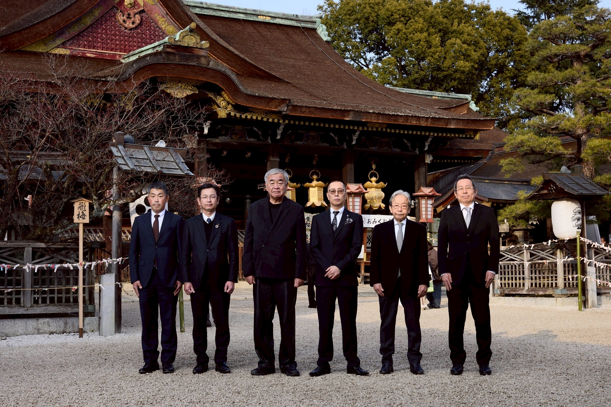

日本の素晴らしき物語を
一〇〇年後の世界に紡ぐ
The Timeless
Condominium
Furnished by
Armani/Casa
世界初、匠の技が結集した邸宅。

舞台は、京文化発祥の地
上七軒。


千年の都・京都。日本文化の精髄がここに息づく。古の都が紡いできた美意識と伝統は、時を超えて今なお色褪せることなく、訪れる人々の心を捉え続けている。
学問の神・菅原道真公を祀る北野天満宮。天暦元年（947年）の創建以来、千年以上の歴史を誇る。梅と紅葉の名所としても名高く、四季折々の美しさが訪れる人を魅了する。
京都最古の花街・上七軒。北野天満宮の東門前に広がるこの地に、かつて長谷川家の邸宅が佇んでいた。歴史と文化が交差するこの場所に、新たな物語が紡がれる。
千利休が茶の湯を大成し、出雲阿国が歌舞伎を創始したこの地。日本文化の転換点となった数々の物語が、上七軒という舞台の上で生まれてきた。
千年の美意識を、
現代に。

この先の内容をご覧いただくには、ご登録が必要となります。
プロジェクトの詳細や世界の匠たちが織りなす物語を、ぜひご体感ください。
ご登録は無料で承っております。

礎の匠
建築の礎を築き、
空間の在り方を整える美


十の匠が結集し、歴史ある「旧 長谷川 邸」を未来へと昇華させる。
「静寂」という言葉がふさわしい上七軒の地に、このプロジェクトを
「THE SILENCE Furnished by ARMANI/CASA」と名付けました。「日本」という至宝を
「世界」の至光品へ。パースや間取りは、物件詳細をご覧ください。

千年の都・京都。日本文化の精髄がここに息づく。古の都が紡いできた美意識と伝統は、時を超えて今なお色褪せることなく、訪れる人々の心を捉え続けている。四季の移ろいとともに表情を変える街並み、そして脈々と受け継がれてきた職人の技。この地が持つ唯一無二の空気感こそが、The Timeless Condominiumの原点である。

学問の神・菅原道真公を祀る北野天満宮。天暦元年（947年）の創建以来、千年以上の歴史を誇る。梅と紅葉の名所としても名高く、四季折々の美しさが訪れる人を魅了する。この聖域に隣接する立地が、本邸宅に比類なき格式と静謐をもたらしている。

京都最古の花街・上七軒。北野天満宮の東門前に広がるこの地に、かつて長谷川家の邸宅が佇んでいた。歴史と文化が交差するこの場所に、新たな物語が紡がれる。室町時代から続くこの花街の風情を纏いながら、現代の最高峰の住空間を実現する。

千利休が茶の湯を大成し、出雲阿国が歌舞伎を創始したこの地。日本文化の転換点となった数々の物語が、上七軒という舞台の上で生まれてきた。その精神を受け継ぎ、建築・工芸・デザインの巨匠たちが再び集結し、新たな文化遺産を創造する。